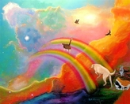

The reaper comes
 Time to read: 3 min
December 3, 2017
This is never an easy subject to approach..
Where did they go? Mr.Sonic isnt animated anymore…what happened?
Eye just want to hold him..some more longs time and…hes sooo stiff and cold…
Wye is he not huff and puff and all ghostly like?
SNIFF…SNIFFF…
Hes gone….
Life is the magic between realms. Life is the etheric etity unknown of energy.
It is the life that animates us.We grow up in representation of that life, with physical aspects..
But we the light beings of the universe are the animation. The rest is just “worm food” or
“plant food” at that point.
Blood and Air (nitrogen/oxygen) keeps the physical ‘us’ alive.
no blood or bleed out and we die.
no air and we gasp out and die.
Then we disconnect back to true energy. No, its not the end..maybe a way back to our energy roots…to heaven…maybe… —
Growing old is fine.
Sometimes we get hurt prematurely, or in case of wee ones ran over…
But when MEAN PEOPLE strike us, poison us, or are cruel and BEAT us…
Departure is even more faster and more sorrowful for those here….and it isnt right.
Trust your gut..if it looks like cheese, it smells like cheese…its cheese…dont question it.
Ever.
WHO IS REALLY the voice of the hedge???
FBI, ASPCA are supposed to step up…in UK/Europe it is a crime to ignore the wildlife gophery-sized hedgehogs in the wild. People are repeatedly asked to safe thier houses and open gardens and rescue hedgehogs…I cant say this is free or easy…
We do it because we care.
But in america…DO WE CARE? Im seeing the “on paper we care”…im not seeing the actual caring part and giving a damn.
Maybe I should move to europe?? Some countries would pay me to move and stay there..
What does a hedgehog want most?
A fine bed A quiet little street Food/Water A place to sleep or raise some kids
-Just like 3 doors down sings about….and Ive been there.
I have been ‘the hedge’ and I have ‘been there’..wanting nothing more than a slightly larger city and less physical labour and a taad more technology…and a few of my own..
Its like climbing a mountain or being in space…you dont want to leave places like that, ever.
And to think they are only light years away…a weekend trip at minimal….